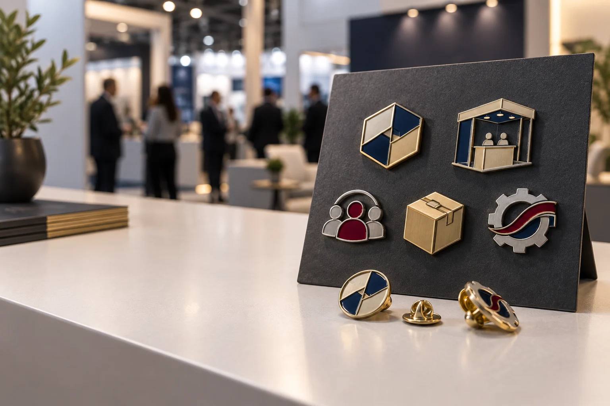

Pines personalizados preparados para atraer visitas y reforzar una marca en una feria.
Un stand tiene pocos segundos para llamar la atención. El visitante pasa frente a muchas marcas, recibe folletos, escucha propuestas y decide rápidamente dónde detenerse. En este entorno, los pines personalizados para stands pueden ayudar a iniciar una conversación y mantener el recuerdo de la marca después del evento.
La clave no está en fabricar un objeto con el logotipo más grande posible. Un buen pin para feria debe ser fácil de reconocer, cómodo de llevar, coherente con la identidad visual y sencillo de distribuir. También debe estar pensado para el objetivo real de la empresa: atraer tráfico, presentar un producto, reconocer a un cliente, identificar al equipo o reforzar una comunidad.
Si estás planificando una feria o congreso, esta guía te ayuda a convertir una idea de merchandising en un pedido concreto. Para una estrategia más amplia, puedes consultar nuestra guía sobre merchandising para ferias en España.
Por qué los pines funcionan bien en un stand
Un pin metálico ocupa poco espacio y puede circular durante mucho tiempo después de la feria. A diferencia de un folleto, no depende de que el visitante conserve información impresa. A diferencia de un regalo voluminoso, es fácil de transportar, almacenar y separar por campañas.
Además, una pieza metálica permite trabajar varios niveles de percepción:
- Reconocimiento visual: una forma, color o símbolo puede asociarse rápidamente con la marca.
- Experiencia táctil: el relieve y el peso hacen que el producto se sienta más especial que un artículo plano.
- Conversación: una colección o una edición limitada puede servir como punto de partida para explicar una novedad.
- Repetición: el mismo sistema puede adaptarse a futuras ferias, productos o categorías de clientes.
Un pin no sustituye una buena conversación comercial. Su función es reforzarla: debe acompañar el mensaje del stand, no competir con él.
4 objetivos distintos para un mismo stand
1. Atraer visitantes al espacio de la marca
Si el objetivo principal es aumentar el tráfico, el diseño debe leerse desde cierta distancia. Las formas especiales, los contrastes de color y los símbolos sencillos suelen funcionar mejor que un logotipo muy pequeño o un texto largo.
Una buena práctica es crear una pieza abierta para visitantes generales y reservar una variante especial para las personas que participen en una demostración o conversación. Esto permite atraer sin regalar todo el inventario al principio del día.
2. Presentar un producto o una innovación
Un pin puede representar una función, una tecnología, una línea de producto o una edición de lanzamiento. En este caso, la tarjeta es importante: puede explicar qué representa el símbolo y dirigir al visitante a una página con más información.
Para lanzamientos, una serie de dos o tres diseños ayuda a diferenciar el producto principal, la aplicación y la campaña. Mantén el mismo borde, proporción y acabado para que el conjunto se perciba como una familia.
3. Reconocer a clientes, partners o prensa
Los contactos prioritarios no tienen por qué recibir exactamente el mismo artículo que el público general. Un pin corporativo con esmalte duro, relieve definido y una tarjeta personalizada puede funcionar como un detalle de relación, especialmente dentro de un kit de reunión o de prensa.
Cuando la pieza sea para una persona concreta o para un grupo reducido, la presentación importa tanto como el diseño. Una caja pequeña, una tarjeta de agradecimiento o una numeración limitada pueden aumentar el valor percibido sin complicar todo el pedido.
4. Identificar al equipo del stand
El staff debe ser fácil de reconocer, pero la insignia también tiene que ser cómoda para llevar durante muchas horas. Prioriza un peso razonable, un cierre seguro y un tamaño que permita leer el nombre o la función.
Para uniformes delicados, un imán puede evitar perforaciones; para prendas de trabajo o piezas más grandes, un alfiler o doble poste puede ofrecer una fijación más estable. Consulta nuestra guía de tipos de cierres para pines metálicos antes de cerrar el diseño.
Cómo diseñar pines personalizados para stands
Empieza por un símbolo, no por todo el mensaje
El espacio de un pin es limitado. Elige un elemento que pueda reconocerse sin explicación: una forma, una mascota, un producto, una herramienta o un icono propio. La información adicional puede ir en la tarjeta, en el packaging o en la página de destino.
Diseña a tamaño real
Un dibujo que se ve bien en una pantalla grande puede perder legibilidad cuando se reduce a 20, 25 o 30 mm. Revisa el grosor de las líneas, la separación entre colores, el tamaño de las letras y el espacio alrededor del borde metálico.
Usa una colección para organizar la campaña
Una colección de tres a cinco referencias puede separar objetivos sin hacer que el stand parezca una tienda llena de productos desconectados. Por ejemplo:
- una pieza para visitas generales;
- una pieza para demostraciones o reuniones;
- una variante para clientes y partners;
- una insignia para el equipo;
- una edición limitada para una campaña especial.
Define primero las reglas comunes de la serie: tamaño, borde, cierre, baño metálico y estilo de tarjeta. Después cambia el símbolo o el color de cada referencia.
Qué acabado elegir para un pin de feria
La técnica debe responder al diseño y al uso. No existe un acabado universalmente mejor.
| Necesidad | Opción habitual | Ventaja principal |
|---|---|---|
| Colores vivos y merchandising amplio | Esmalte blando | Textura perceptible y buena flexibilidad de diseño |
| Regalo corporativo premium | Esmalte duro | Superficie lisa y apariencia cuidada |
| Logotipo, escudo o símbolo sobrio | Relieve 2D | Lectura limpia con protagonismo del metal |
| Figura, mascota o producto con volumen | Relieve 3D | Profundidad y presencia táctil |
| Degradados o ilustraciones detalladas | Impresión protegida | Más libertad para imágenes y tonos |
Si quieres comparar estas opciones con más detalle, revisa nuestra guía sobre pines esmaltados personalizados y el artículo sobre tendencias en insignias metálicas para 2026.
Packaging para que el pin siga trabajando después de la feria
La tarjeta convierte una pieza pequeña en una experiencia más completa. Puede incluir una frase breve, la edición, el nombre de la colección, un mensaje de agradecimiento o un código QR. El objetivo no es llenar la tarjeta de texto, sino facilitar el siguiente paso.
Antes de producir, decide:
- si el pin se entregará suelto, montado en tarjeta o dentro de una caja;
- si habrá una tarjeta diferente para cada variante;
- si el QR lleva a una página de producto, una demo o un formulario;
- si necesitas separar las unidades por equipo, día o tipo de visitante;
- qué materiales de empaque puedes identificar y gestionar correctamente.
Un packaging sencillo suele ser suficiente para un pedido de distribución amplia. Para clientes, prensa o partners, puedes usar una presentación más cuidada. La decisión debe seguir la función de la pieza y el presupuesto de la campaña.
Cómo calcular cantidades para un stand
Evita calcular todo el pedido con una única cifra. Divide el inventario por uso:
- Visitantes generales: piezas abiertas para atraer y agradecer la visita.
- Demostraciones y reuniones: unidades vinculadas a una conversación o producto.
- Clientes y partners: variantes premium o series limitadas.
- Staff y organización: insignias de identificación.
- Reposición y seguimiento: unidades para contactos posteriores y ventas.
También conviene separar por diseño. Si fabricas una colección, no asumas que todas las referencias tendrán la misma demanda. El símbolo principal puede necesitar más unidades, mientras que una edición limitada puede producirse en menor cantidad.
Calendario de producción recomendado
Si el stand tiene una fecha fija, empieza con margen. Como referencia de planificación, ocho a diez semanas permiten ordenar las decisiones cuando hay varios diseños, muestra o packaging personalizado.
- Semana 1: definir objetivo, público, cantidad y presupuesto.
- Semanas 2–3: cerrar símbolo, tamaño, colores, acabado y cierre.
- Semanas 3–4: revisar el arte técnico y aprobar una muestra si procede.
- Semanas 5–7: producir, revisar y montar el packaging.
- Semanas 8–10: recibir, contar, separar y preparar la distribución.
Este calendario es una recomendación de organización, no una promesa de plazo. La fecha real depende de la complejidad del molde, la cantidad, el número de variantes y el transporte. Indica siempre la fecha de recepción, no solo la fecha de apertura de la feria.
Errores que reducen el impacto de un pin de stand
Intentar meter toda la identidad en una pieza pequeña
Logotipo, teléfono, web, fecha, eslogan y muchas líneas de texto pueden hacer que el pin sea difícil de leer. Prioriza un símbolo y lleva la información completa al packaging o a la página de destino.
No adaptar el diseño al lugar de uso
Un pin para la solapa no necesita la misma fijación que una insignia para uniforme o una pieza para mochila. El cierre debe definirse junto con el tamaño y el peso.
Repartir las ediciones especiales demasiado pronto
Si todas las piezas se entregan sin segmentación durante las primeras horas, puede faltar inventario para reuniones, clientes o contactos que lleguen más tarde. Prepara lotes y asigna responsables.
Usar una imagen del producto que no coincide con el pedido
Si el pin tiene acabado dorado en la fotografía pero se entrega en níquel, la expectativa puede quedar mal definida. Presenta el acabado, el tamaño y el packaging con claridad antes de aprobar la producción.
Preguntas frecuentes
¿Qué tamaño debe tener un pin para un stand?
Para una pieza de solapa o tarjeta, un tamaño aproximado de 20 a 30 mm suele ser fácil de llevar. La medida final depende del diseño, el texto, el peso y el lugar donde se usará.
¿Cómo reparto los pines durante una feria?
Separa las unidades para visitantes generales, clientes, partners, equipo, reposición y seguimiento posterior. Así controlas mejor el inventario y reservas las ediciones especiales para relaciones prioritarias.
¿Puedo personalizar la tarjeta del pin?
Sí. La tarjeta puede incluir el logotipo, la historia del diseño, una llamada a la acción, un código QR o la información de una campaña.
¿Qué información necesita el fabricante?
Comparte el diseño o una referencia, la cantidad por modelo, el tamaño, los colores, el acabado metálico, el cierre, el packaging, el país de entrega y la fecha límite. Si todavía no tienes el arte final, una referencia visual y el uso de la pieza bastan para empezar.
Conclusión: un buen pin convierte una visita en recuerdo
Los pines personalizados para stands funcionan mejor cuando forman parte de una estrategia de feria completa. El diseño debe atraer, la pieza debe ser cómoda, el acabado debe corresponder al uso y la distribución debe apoyar las conversaciones importantes.
Antes de pedir precio, define el objetivo, el público, la cantidad, el tamaño, el cierre y la presentación. Con un brief claro es más fácil comparar propuestas, evitar retrasos y crear una colección que puedas repetir en futuras ediciones.
En Insignia Metálica podemos ayudarte a desarrollar pines metálicos, insignias para equipos, tarjetas y packaging para tu próximo stand, feria o congreso.